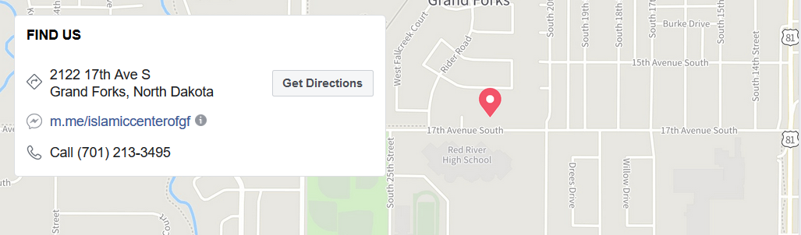

Contact Us
The Islamic Center of Grand Forks (ICGF) is a non-profit religious organization serving the Muslim community of approximately 2000 in Grand Forks, North Dakota's third largest city. ICGF is managed by elected volunteers.
Our Masjid is located at 2122 17th Ave S Grand Forks, North Dakota. Click here to locate our Masjid.
Islamic Center of Grand Forks (ICGF)2122 17th Ave S
Grand Forks, ND 58201
Call: (701)213-3495